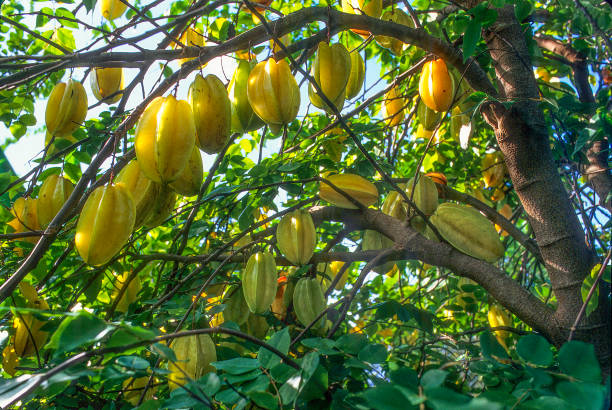
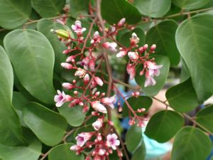

es una fruta curiosa, ya que al cortarla en rodajas presenta forma de estrella de cinco puntas, su pulpa es jugosa con textura suave como de color amarillo, contiene una cantidad moderada de provitamina A y de vitamina C, en cuanto a minerales, destaca su contenido en potasio, calcio y fibra.

Fruta de estrella Esta fruta de carambolo se cultiva principalmente en �reas tropicales, cuando se corta en secci�n transversal, se asemeja a una estrella peque�a, es llamado as� por su parecido a una estrella al observarla seccionada transversalmente, en algunas zonas es conocido como carambolo.
Cuando la fruta esta madura Es de color amarillo o anaranjado.

Como se cultiva el arbol de carambolo:
Esta fruta,seg�n expertos agricultores mexicanos, se caracteriza por ser �nica y muy cotizada en los mercados internacionales. La carambola posee importantes nutrientes que benefician al organismo y lo suplen de prote�nas y vitaminas indispensables para la salud.
Para cultivar un �rbol de carambola, debes:
Plantarlo a pleno sol, lejos de otros �rboles y estructuras
Protegerlo del viento
Plantarlo en un suelo bien drenado y f�rtil
Regarlo regularmente, pero sin excederse
Fertilizarlo, especialmente si el suelo es poco f�rtil
Protegerlo de las bajas temperaturas
Consideraciones adicionales
La carambola es una planta subtropical.
No tolera la sequ�a.
Es sensible al exceso de riego.
Puede sobrevivir a cortos per�odos de congelaci�n.
Crece mejor en zonas protegidas del viento.
Puede producir frutos a los 10 � 14 meses despu�s de plantarse.
Puede tener un rendimiento de 10 a 40 lbs (4.5 a 18 kg) de frutos por �rbol por a�o, durante los tres primeros a�os.
Plagas y enfermedades
Los �rboles de carambola son susceptibles a las moscas de la fruta, las polillas de la fruta y las chinches manchadoras de la fruta.
Para tratar la clorosis, puedes aplicar una aplicaci�n foliar de hierro quelado y otros micronutrientes.